공인중개사-2차 (2013-10-27 기출문제)
1과목: 임의구분
1. 공인중개사법령상 중개사무소 개설등록의 결격사유에 해당하는 자를 모두 고른 것은?
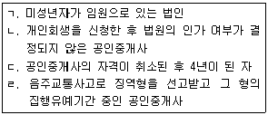
- ㄱ
- ㄱ, ㄹ
- ㄴ, ㄷ
- ㄱ, ㄴ, ㄹ
- ㄴ, ㄷ, ㄹ
(정답률: 27%)

2. 공인중개사법령에 관한 설명으로 옳은 것은?(다툼이 있으면 판례에 의함)(문제 오류로 실제 시험에서는 모두 정답 처리 되었습니다. 여기서는 1번을 누르면 정답 처리 됩니다.)
- 중개업자는 다른 중개업자인 법인의 임원이 될 수 있다.
- 중개업자는 그 등록관청의 관할구역 안에 여러 개의 중개사무소를 둘 수 있다.
- 공인중개사는 국토교통부장관의 허가를 얻은 경우에 한하여 그 자격증을 타인에게 양도할 수 있다.
- 아파트 입주권은 중개대상물이 될 수 없다.
- 거래당사자가 무자격자에게 중개를 의뢰한 행위는 처벌의 대상이 된다.
(정답률: 44%)
3. 공인중개사법령상 부동산거래계약 변경신고서를 제출할 수 있는 사유를 모두 고른 것은?
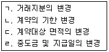
- ㄱ, ㄷ
- ㄷ, ㄹ
- ㄱ, ㄴ, ㄹ
- ㄴ, ㄷ, ㄹ
- ㄱ, ㄴ, ㄷ, ㄹ
(정답률: 39%)
4. 공인중개사법령상 용어와 관련된 설명으로 틀린 것은?(다툼이 있으면 판례에 의함)
- 법인인 중개업자의 소속공인중개사는 그 중개업자의 중개업무를 보조할 수 있다.
- 거래당사자 사이에 부동산에 관한 환매계약이 성립하도록 알선하는 행위도 중개에 해당한다.
- 부동산 컨설팅에 부수하여 반복적으로 이루어진 부동산중개행위는 중개업에 해당하지 않는다.
- 공인중개사 자격취득 후 중개사무소 개설등록을 하지 않은 자는 중개업자가 아니다.
- 중개보조원이 중개업자를 대신하여 특정 중개업무를 수행하였더라도 해당 거래계약서에 중개보조원을 중개업자로 기재해서는 안 된다.
(정답률: 46%)
5. 공인중개사법령상 휴업 등에 관한 설명으로 옳은 것은?
- 중개업자가 중개사무소 개설등록 후 3월을 초과하여 업무를 개시하지 않을 경우, 미리 휴업신고를 해야 한다.
- 법령상 부득이한 사유가 없는 한, 휴업은 3월을 초과할 수 없다.
- 부동산중개업의 재개신고나 휴업기간의 변경신고는 전자문서에 의한 방법으로 할 수 없다.
- 중개업자가 휴업기간의 변경신고를 할 때에는 그 신고서에 중개사무소등록증을 첨부해야 한다.
- 중개업자가 3월을 초과하는 휴업을 하면서 휴업신고를 하지 않은 경우에는 500만원 이하의 과태료를 부과한다.
(정답률: 45%)
6. 공인중개사법령상 중개사무소의 개설등록에 관한 설명으로 옳은 것은?
- 개설등록을 신청받은 등록관청은 그 인가 여부를 신청일부터 14일 이내에 신청인에게 통보해야 한다.
- 광역시장은 개설등록을 한 자에 대하여 법령에 따라 중개사무소등록증을 교부해야 한다.
- 법인인 중개업자가 주택분양을 대행하는 경우, 겸업제한 위반을 이유로 그 등록이 취소될 수 있다.
- 소속공인중개사는 중개사무소를 두려는 지역을 관할하는 등록관청에 개설등록을 신청할 수 없다.
- A광역시 甲구(區)에 주된 사무소 소재지를 둔 법인인 중개업자는 A광역시 乙구(區)에 분사무소를 둘 수 없다.
(정답률: 35%)
7. 공인중개사법령상 중개사무소의 개설등록기준에 관한 설명으로 옳은 것은?(다툼이 있으면 판례에 의함)
- 「농업협동조합법」에 따라 부동산중개사업을 할 수 있는 지역농업협동조합도 공인중개사법령에서 정한 개설등록기준을 갖추어야 한다.
- 개설등록을 하기 위해서는 20㎡이상의 사무소 면적을 확보해야 한다.
- 가설건축물대장에 기재된 건축물을 사무소로 확보한 등록신청자에 의한 중개업등록은 허용된다.
- 합명회사는 자본금이 5천만원 미만이더라도 개설등록을 할 수 있다.
- 변호사가 부동산중개업무를 하기 위해서는 공인중개사법령에서 정한 기준에 따라 개설등록을 해야 한다.
(정답률: 35%)
8. 공인중개사법령상 각종 신고에 관한 설명으로 틀린 것은?
- 중개업자는 소속공인중개사와 고용관계가 종료된 때에는 국토교통부령으로 정하는 바에 따라 등록관청에 신고해야 한다.
- 법인인 중개업자는 대통령령이 정하는 바에 따라 등록관청에 신고하고 그 관할구역 외의 지역에 분사무소를 둘 수 있다.
- 분사무소의 설치신고를 하는 자는 국토교통부령이 정하는 바에 따라 수수료를 납부해야 한다.
- 분사무소의 이전신고를 받은 등록관청은 그 분사무소의 이전 전 및 이전 후의 소재지를 관할하는 시장ㆍ군수 또는 구청장에게 그 사실을 통보해야 한다.
- 등록관청 관할 외 지역으로 중개사무소를 이전한 경우, 이전 후 등록관청의 요청으로 종전 등록관청이 송부해야 하는 서류에는 중개사무소 개설등록 신청서류도 포함된다.
(정답률: 26%)
9. 공인중개사의 매수신청대리인 등록 등에 관한 규칙상 매수신청대리업무를 수행하는 중개업자의 금지행위에 해당하지 않는 것은?
- 명의를 대여하는 행위
- 매수신청대리인 등록증을 대여하는 행위
- 다른 중개업자의 명의를 사용하는 행위
- 이중으로 매수신청대리인 등록신청을 하는 행위
- 「임대주택법」에 따른 임차인의 임대주택 우선매수신고를 하는 행위
(정답률: 40%)
10. 공인중개사법령상 인장의 등록에 관한 설명으로 틀린 것은?
- 중개업자의 인장이 등록관청에 등록되어 있으면 소속공인중개사의 인장은 소속공인중개사의 업무개시 후에 등록해도 된다.
- 중개업자가 등록한 인장을 변경한 경우, 변경일부터 7일 이내에 변경된 인장을 등록관청에 등록해야 한다.
- 중개업자의 인장등록은 중개보조원에 대한 고용신고와 같이 할 수 있다.
- 법인인 중개업자가 주된 사무소에서 사용할 인장을 등록할 때에는「상업등기규칙」에 따라 신고한 법인의 인장을 등록해야 한다.
- 법인인 중개업자의 인장등록은「상업등기규칙」에 따른 인감증명서의 제출로 갈음한다.
(정답률: 35%)
11. 공인중개사법령상 공인중개사의 위반행위에 대한 자격정지기준이 3월인 경우는?
- 하나의 거래 중개가 완성된 때 서로 다른 두 개의 거래계약서를 작성한 경우
- 중개대상물의 확인ㆍ설명의 근거자료를 제시하지 않은 경우
- 중개업자가 동시에 다른 중개업자의 소속공인중개사로 된 경우
- 거래계약서에 거래내용을 거짓으로 기재한 경우
- 당해 중개대상물의 거래상 중요사항에 관하여 거짓된 언행으로 중개의뢰인의 판단을 그르치게 한 경우
(정답률: 34%)
12. 공인중개사법령상 부동산거래정보망에 관한 설명으로 옳은 것은?
- 거래정보사업자로 지정받기 위하여 신청서를 제출하는 경우, 공인중개사 자격증 원본을 첨부해야 한다.
- 국토교통부장관은 거래정보사업자 지정신청을 받은 날부터 14일 이내에 이를 검토하여 그 지정여부를 결정해야 한다.
- 전속중개계약을 체결한 중개업자가 부동산거래정보망에 임대 중인 중개대상물 정보를 공개하는 경우, 임차인의 성명을 공개해야 한다.
- 거래정보사업자로 지정받은 법인이 해산하여 부동산거래정보망사업의 계속적인 운영이 불가능한 경우, 국토교통부장관은 청문을 거치지 않고 사업자 지정을 취소할 수 있다.
- 거래정보사업자는 중개업자로부터 의뢰받은 중개대상물의 정보뿐만 아니라 의뢰인의 이익을 위해 직접 조사한 중개대상물의 정보도 부동산거래정보망에 공개할 수 있다.
(정답률: 31%)
13. 공인중개사법령상 공인중개사 자격증 등에 관한 설명으로 옳은 것은?(다툼이 있으면 판례에 의함)
- 공인중개사 자격증은 특정 업무를 위하여 일시적으로 대여할 수 있다.
- 무자격자인 乙이 공인중개사인 甲명의의 중개사무소에서 동업형식으로 중개업무를 한 경우, 乙은 형사처벌의 대상이 된다.
- 공인중개사 자격증을 대여받은 자가 임대차의 중개를 의뢰한 자와 직접 거래당사자로서 임대차계약을 체결하는 것도 중개행위에 해당한다.
- 무자격자가 공인중개사의 업무를 수행하였는지 여부는 실질적으로 무자격자가 공인중개사의 명의를 사용하여 업무를 수행하였는지 여부에 상관없이, 외관상 공인중개사가 직접 업무를 수행하는 형식을 취하였는지 여부에 따라 판단해야 한다.
- 무자격자가 자신의 명함에 중개사무소명칭을 ‘부동산뉴스’, 그 직함을 ‘대표’라고 기재하여 사용하였더라도, 이를 공인중개사와 유사한 명칭을 사용한 것이라고 볼 수 없다.
(정답률: 32%)
14. 공인중개사법령상 공인중개사 자격취소에 관한 설명으로 옳은 것은?
- 공인중개사가 폭행죄로 징역형을 선고받은 경우에는 자격취소 사유가 된다.
- 자격이 취소된 자는 그 자격증을 폐기하고, 그 사실을 시ㆍ도지사에게 고지해야 한다.
- 자격취소처분을 받은 자는 그 취소처분을 안 날로부터 14일 이내에 그 자격증을 반납해야 한다.
- 취소처분을 받은 자가 자격증을 분실한 경우에는 그 사유를 구두로 설명하는 것으로 자격증 반납에 갈음할 수 있다.
- 공인중개사가 자격정지처분을 받고 그 기간 중에 다른 중개업자의 소속공인중개사가 된 경우, 자격취소 사유가 된다.
(정답률: 42%)
15. 공인중개사법령상 중개업자가 중개대상물의 거래계약서에 기재해야 할 사항이 아닌 것은?
- 거래금의 지급일자
- 중개업자의 계약서 사본 보존기간
- 계약의 조건이 있는 경우 그 조건
- 중개대상물 확인ㆍ설명서 교부일자
- 당사자의 담보책임을 면제하기로 한 경우 그 약정
(정답률: 45%)
16. 공인중개사법령에 관한 설명으로 옳은 것은?(다툼이 있으면 판례에 의함)
- 무자격자가 우연한 기회에 단 1회 거래행위를 중개한 경우, 과다하지 않은 중개수수료 지급약정도 무효이다.
- 지역농업협동조합이 부동산중개업을 하는 때에는 2천만원 이상의 보증을 설정해야 한다.
- 손해배상책임을 보장하기 위한 공탁금은 중개업자가 폐업한 날부터 5년이 경과해야 회수할 수 있다.
- 공인중개사가 자신 명의의 중개사무소에 무자격자로 하여금 자금을 투자하고 이익을 분배받도록 하는 것만으로도 등록증 대여에 해당된다.
- 분사무소 한 개를 설치한 법인인 중개업자가 손해배상책임의 보장을 위해 공탁만을 하는 경우, 총 3억원 이상을 공탁해야 한다.
(정답률: 34%)
17. 공인중개사법령상 중개계약에 관한 설명으로 옳은 것(O)과 틀린 것(X)을 바르게 짝지은 것은?
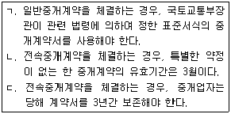
- ㄱ(X), ㄴ(O), ㄷ(O)
- ㄱ(X), ㄴ(X), ㄷ(O)
- ㄱ(X), ㄴ(O), ㄷ(X)
- ㄱ(O), ㄴ(X), ㄷ(O)
- ㄱ(O), ㄴ(X), ㄷ(X)
(정답률: 41%)
18. 공인중개사법령상 중개업자는 계약금등을 대통령령이 정하는 자의 명의로 금융기관등에 예치하도록 거래당사자에게 권고할 수 있는데, 그 명의자에 속하지 않는 것은?
- 「보험업법」에 따른 보험회사
- 공제사업을 하는 공인중개사협회
- 공탁금을 예치받는 법원
- 「우체국예금ㆍ보험에 관한 법률」에 따른 체신관서
- 「자본시장과 금융투자업에 관한 법률」에 따른 신탁업자
(정답률: 31%)
19. 공인중개사법령상 중개업자의 성명과 사무소명칭에 관한 설명으로 옳은 것은?
- 중개업자는 그 사무소 명칭으로 ‘공인중개법률사무소’를 사용할 수 있다.
- 토지의 매매 등을 알선하는 무자격 중개업자는 그 사무소에 ‘부동산중개’와 유사한 명칭을 사용할 수 있다.
- 중개업자가 설치한 옥외광고물에 성명을 거짓으로 표기한 경우에는 500만원 이하의 과태료를 부과한다.
- 법인인 중개업자가 분사무소에 옥외광고물을 설치하는 경우, 분사무소신고필증에 기재된 책임자의 성명을 그 광고물에 표기해야 한다.
- 등록관청이 위법하게 설치된 사무소간판의 철거를 명하였음에도 이를 철거하지 않는 경우, 그 철거절차는「민사집행법」에 따라야 한다.
(정답률: 42%)
20. 공인중개사법령상 공인중개사인 중개업자의 금지행위가 아닌 것은?
- 토지의 매매를 업으로 하는 행위
- 등기된 입목의 매매를 업으로 하는 행위
- 중개의뢰인과 직접 중개대상물을 거래하는 행위
- 건축물의 매매를 업으로 하는 행위
- 일방의 중개의뢰인을 대리하여 타인에게 중개대상물을 임대하는 행위
(정답률: 39%)
21. 공인중개사의 매수신청대리인 등록 등에 관한 규칙상 매수신청대리인으로 등록된 중개업자가 매수신청대리의 위임을 받아 할 수 없는 행위는?
- 입찰표의 작성 및 제출
- 매각기일변경신청
- 「민사집행법」에 따른 차순위매수신고
- 「민사집행법」에 따른 매수신청 보증의 제공
- 「민사집행법」에 따른 공유자의 우선매수신고
(정답률: 30%)
22. 공인중개사법령상 법인인 중개업자가 겸업할 수 있는 것은?(다툼이 있으면 판례에 의함)
- 농업용 건축물에 대한 관리대행
- 토지에 대한 분양대행
- 중개업자 아닌 공인중개사를 대상으로 한 중개업 경영기법의 제공행위
- 부동산 개발에 관한 상담
- 의뢰인에게 경매대상 부동산을 취득시키기 위하여 중개업자가 자신의 이름으로 직접 매수신청을 하는 행위
(정답률: 42%)
23. 공인중개사법령상 중개업자 등의 교육에 관한 설명으로 틀린 것은?
- 중개사무소의 개설등록을 신청하려는 공인중개사는 32시간 이상 44시간 이하의 실무교육을 받아야 한다.
- 폐업신고 후 1년 이내에 중개사무소의 개설등록을 다시 신청하려는 자는 실무교육이 면제된다.
- 공인중개사가 중개사무소의 개설등록을 신청하려는 경우, 등록신청일 전 1년 이내에 법인인 중개업자가 실시하는 실무교육을 받아야 한다.
- 등록관청은 법령에 따른 연수교육을 실시하려는 경우, 교육일 7일전까지 교육일시ㆍ교육장소 및 교육내용을 교육대상자에게 통지해야 한다.
- 분사무소 설치신고의 경우에는 그 분사무소의 책임자가 그 신고일 전 1년 이내에 실무교육을 받아야 한다.
(정답률: 26%)
24. 공인중개사법령상 중개업자에 대한 업무정지처분에 관한 설명으로 옳은 것은?
- 광역시장은 업무정지기간의 2분의 1 범위 안에서 가중 할 수 있다.
- 업무정지기간을 가중 처분하는 경우, 그 기간은 9월을 한도로 한다.
- 최근 1년 이내에 이 법에 의하여 2회 이상 업무정지처분을 받은 중개업자가 다시 업무정지처분에 해당하는 행위를 한 경우, 6월의 업무정지처분을 받을 수 있다.
- 업무정지처분은 해당사유가 발생한 날부터 2년이 된 때에는 이를 할 수 없다.
- 중개업자가 중개대상물에 관한 정보를 거짓으로 공개한 경우, 등록관청은 위반행위의 동기 등을 참작하여 4월의 업무정지처분을 할 수 있다.
(정답률: 34%)
25. 공인중개사법령상 공인중개사협회와 공제사업에 관한 설명으로 옳은 것은 모두 몇 개인가?
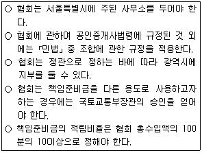
- 1개
- 2개
- 3개
- 4개
- 5개
(정답률: 24%)
26. 공인중개사법령상 공인중개사가 1년 이하의 징역 또는 1천만원 이하의 벌금에 처해지는 경우가 아닌 것은?
- 2 이상의 중개사무소에 소속된 경우
- 공인중개사자격증을 양도한 경우
- 이중으로 중개사무소의 개설등록을 한 경우
- 중개사무소의 개설등록을 하지 않고 중개업을 한 경우
- 다른 사람에게 자기의 성명을 사용하여 중개업무를 하게 한 경우
(정답률: 46%)
27. 공인중개사법령상 주택거래 신고와 관련하여, 신고기간 만료일 다음 날부터 기산하여 신고를 하지 않은 기간[이하 ‘해태기간(A)’이라 한다]과 ‘실제 거래가격(B)’에 따른 ‘과태료 부과기준금액(C)’을 잘못 짝지은 것은?(순서대로 A, B, C)
- 25일, 7천만원, 25만원
- 25일, 4억원, 100만원
- 60일, 2억원, 100만원
- 60일, 4억원, 200만원
- 120일, 2억원, 400만원
(정답률: 14%)
28. 공인중개사법령상 중개사무소 개설등록을 반드시 취소해야 하는 사유가 아닌 것을 모두 고른 것은?
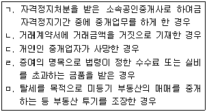
- ㄱ, ㄴ, ㅁ
- ㄱ, ㄷ, ㄹ
- ㄴ, ㄹ, ㅁ
- ㄱ, ㄷ, ㄹ, ㅁ
- ㄴ, ㄷ, ㄹ, ㅁ
(정답률: 29%)
29. 공인중개사법령상 중개계약과 관련한 설명으로 틀린 것은?
- 전속중개계약서에는 중개업자의 사무소 소재지가 기재되어야 한다.
- 공동상속부동산의 교환계약을 중개하는 경우, 중개업자는 상속인 전원의 동의 유무를 확인해야 한다.
- 주거용 건축물의 중개대상물 확인ㆍ설명서에서 권리관계와 승강기 유무는 중개업자의 기본 확인사항이다.
- 전속중개계약의 유효기간 내에 중개의뢰인이 스스로 발견한 상대방과 거래한 경우, 중개의뢰인은 중개수수료의 50퍼센트에 해당하는 금액의 범위 안에서 중개를 위해 소요된 비용을 지불해야 한다.
- 주택거래계약신고서상 신고대상에는 주택의 소재지, 면적, 실제 거래가격도 포함된다.
(정답률: 32%)
30. 중개업자가 Y시 소재 X주택에 대하여 동일당사자 사이의 매매와 임대차를 동일 기회에 중개하는 경우, 일방당사자로부터 받을 수 있는 중개수수료의 최고한도액은?
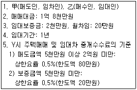
- 80만원
- 90만원
- 97만원
- 100만원
- 107만원
(정답률: 26%)
31. 중개업자 甲이 乙소유의 X토지를 매수하려는 丙의 의뢰를 받아 매매를 중개하는 경우에 관한 설명으로 옳은 것은?
- 계약서를 작성한 甲이 자신의 이름으로는 그 계약서의 검인을 신청할 수 없다.
- X토지의 소유권을 이전받은 丙이 매수대금의 지급을 위하여 X토지에 저당권을 설정하는 경우, 저당권설정계약서도 검인의 대상이 된다.
- 丙이 X토지에 대하여 매매를 원인으로 소유권이전청구권 보전을 위한 가등기에 기하여 본등기를 하는 경우, 매매계약서는 검인의 대상이 된다.
- 甲이 부동산거래 신고필증을 교부받아도 계약서에 검인을 받지 않는 한 소유권이전등기를 신청할 수 없다.
- 丙으로부터 검인신청을 받은 X토지 소재지 관할청이 검인할 때에는 계약서 내용의 진정성을 확인해야 한다.
(정답률: 29%)
32. 중개업자가 분묘가 있는 토지에 관하여 중개의뢰인에게 설명한 내용으로 틀린 것은?(다툼이 있으면 판례에 의함)
- 문중자연장지를 조성하려는 자는 관할 시장등의 허가를 받아야 한다.
- 남편의 분묘구역 내에 처의 분묘를 추가로 설치한 경우, 추가설치 후 30일 이내에 해당 묘지의 관할 시장등에게 신고해야 한다.
- 분묘기지권은 분묘의 수호와 봉사에 필요한 범위 내에서 타인의 토지를 사용할 수 있는 권리이다.
- 분묘기지권은 특별한 사정이 없는 한, 분묘의 수호와 봉사가 계속되고 그 분묘가 존속하는 동안 인정된다.
- 가족묘지의 면적은 100㎡이하여야 한다.
(정답률: 26%)
33. 중개업자가 임대인 甲과 임차인 乙사이에 주택임대차계약을 중개하면서 그 계약의 갱신에 대하여 설명하고 있다. 주택임대차보호법상 ( )에 들어갈 내용으로 옳은 것은?(순서대로 (ㄱ)(ㄴ)(ㄷ)(ㄹ)(ㅁ))
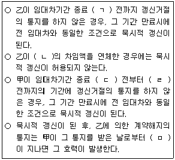
- 1개월, 2기, 6개월, 1개월, 1개월
- 1개월, 2기, 6개월, 1개월, 3개월
- 1개월, 3기, 3개월, 1개월, 1개월
- 3개월, 1기, 3개월, 1개월, 3개월
- 3개월, 2기, 6개월, 3개월, 1개월
(정답률: 35%)
34. 공인중개사법령상 중개업자의 중개대상물의 확인ㆍ설명의무에 관한 설명으로 옳은 것은?(다툼이 있으면 판례에 의함)
- 소속공인중개사가 중개하여 작성한 중개대상물 확인ㆍ설명서에 중개업자가 서명 및 날인한 경우, 소속공인중개사는 서명 및 날인하지 않아도 된다.
- 주거용 건축물의 구조나 진동에 관한 확인ㆍ설명의무는 없다.
- 비주거용 건축물에 관한 중개대상물 확인ㆍ설명서에는 소음에 관한 환경조건도 기재해야 한다.
- 중개대상물에 근저당권이 설정된 경우, 실제의 피담보채무액까지 조사ㆍ확인하여 설명할 의무는 없다.
- 토지에 관한 중개대상물의 확인ㆍ설명서에는 등기된 토지임차권이 존재하더라도 이를 기재할 필요는 없다.
(정답률: 37%)
35. 중개업자 甲이 A와 B가 공유하고 있는 X토지에 대한 A의 지분을 매수하려는 乙의 의뢰를 받아 매매를 중개하고자 한다. 이에 관한 설명으로 옳은 것은?(다툼이 있으면 판례에 의함)
- 甲과 乙은「민법」상의 위임관계에 있지 않으므로 甲은 乙에 대하여 선관주의의무를 부담하지 않는다.
- 甲은 매매계약서에 A와 B의 주소지를 기재해야 한다.
- 甲은 A의 지분처분에 대한 B의 동의 여부를 확인해야 할 의무가 있다.
- 매매계약 체결시에 매매대금은 반드시 특정되어 있어야 한다.
- 甲이 X토지에 저당권이 설정된 사실을 확인하지 않고 중개하였고, 후에 저당권이 실행되어 乙이 소유권을 잃게 된다면, 乙은 甲에게 손해배상을 청구할 수 있다.
(정답률: 28%)
36. 공인중개사법령상 주택매매시 작성하는 ‘중개대상물의 확인ㆍ설명서’에 관한 설명으로 틀린 것은?
- ‘건폐율 상한 및 용적률 상한’은「주택법」에 따라 기재한다.
- 권리관계의 ‘등기부기재사항’은 등기사항증명서를 확인하여 적는다.
- ‘도시ㆍ군계획시설’과 ‘지구단위계획구역’은 중개업자가 확인하여 적는다.
- ‘환경조건’은 중개업자의 세부 확인사항이다.
- 주택 취득시 부담할 조세의 종류 및 세율은 중개업자가 확인한 사항을 적는다.
(정답률: 38%)
37. 공인중개사법령상 등록관청에 신고한 甲과 乙이 받을 수 있는 포상금 최대 금액은?
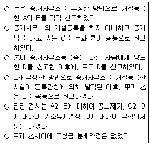
- 甲: 75만원 乙: 75만원
- 甲: 100만원 乙: 100만원
- 甲: 125만원 乙: 75만원
- 甲: 125만원 乙: 100만원
- 甲: 150만원 乙: 50만원
(정답률: 15%)
38. 중개업자 甲의 중개로 2012.10.17. 상가건물의 임대차계약을 체결한 임차인 중에서 상가건물임대차보호법의 적용을 받을 수 있는 경우를 모두 고른 것은?(단, 계약갱신의 경우는 고려하지 않음)
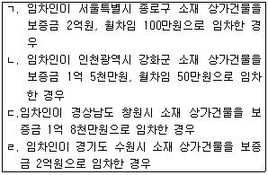
- ㄱ, ㄴ
- ㄱ, ㄹ
- ㄴ, ㄷ
- ㄴ, ㄹ
- ㄷ, ㄹ
(정답률: 20%)
39. 중개업자 甲의 중개로 丙이 乙소유의 X토지를 매수한 후 乙에게 계약금과 중도금을 지급하였다. 그 후 甲은 乙이 X토지를 丁에게 다시 매각한 사실을 알게 되었다. 甲의 설명으로 옳은 것을 모두 고른 것은?(다툼이 있으면 판례에 의함)
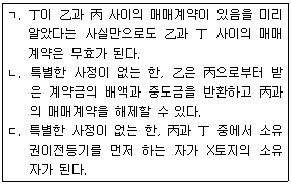
- ㄱ
- ㄴ
- ㄷ
- ㄱ, ㄴ
- ㄴ, ㄷ
(정답률: 27%)
40. 중개업자가 국내토지를 취득하려는 외국인에게 외국인토지법을 설명한 것으로 옳은 것을 모두 고른 것은?
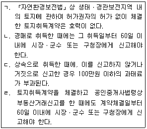
- ㄱ, ㄴ
- ㄱ, ㄷ
- ㄴ, ㄷ
- ㄴ, ㄹ
- ㄷ, ㄹ
(정답률: 34%)
2과목: 임의구분
41. 측량ㆍ수로조사 및 지적에 관한 법령상 지번의 구성 및 부여방법 등에 관한 설명으로 틀린 것은?
- 지번은 아라비아숫자로 표기하되, 임야대장 및 임야도에 등록하는 토지의 지번은 숫자 앞에 “산”자를 붙인다.
- 지번은 본번과 부번으로 구성하되, 본번과 부번 사이에 “－” 표시로 연결한다. 이 경우 “－” 표시는 “의”라고 읽는다.
- 축척변경 시행지역의 필지에 지번을 부여할 때에는 그 지번부여지역에서 인접토지의 본번에 부번을 붙여서 지번을 부여하여야 한다.
- 신규등록 대상토지가 그 지번부여지역의 최종 지번의 토지에 인접하여 있는 경우에는 그 지번부여지역의 최종 본번의 다음 순번부터 본번으로 하여 순차적으로 지번을 부여할 수 있다.
- 행정구역 개편에 따라 새로 지번을 부여할 때에는 도시개발사업 등이 완료됨에 따라 지적확정측량을 실시한 지역의 지번부여 방법을 준용한다.
(정답률: 24%)
42. 측량ㆍ수로조사 및 지적에 관한 법령상 지목을 구분하는 기준으로 옳은 것은?
- 유수(流水)를 이용한 요트장 및 카누장은 “체육용지”로 한다.
- 호두나무를 집단적으로 재배하는 토지는 “과수원”으로 한다.
- 「장사 등에 관한 법률」에 따른 봉안시설과 이에 접속된 부속시설물의 부지는 “대”로 한다.
- 자동차 정비공장 안에 설치된 급유시설의 부지는 “주유소용지”로 한다.
- 원야(原野)를 이루고 있는 암석지 및 황무지는 “잡종지”로 한다.
(정답률: 35%)
43. 다음 중 측량ㆍ수로조사 및 지적에 관한 법령에서 규정하고 있는 지목의 종류에 해당하는 것은?
- 초지
- 선하지
- 저수지
- 항만용지
- 유원지
(정답률: 30%)
44. 다음 중 측량ㆍ수로조사 및 지적에 관한 법령상 토지소유자가 하여야 하는 토지의 이동 신청을 대신할 수 있는 자가 아닌 것은?
- 「민법」제404조에 따른 채권자
- 주차전용 건축물 및 이에 접속된 부속시설물의 부지인 경우는 해당 토지를 관리하는 관리인
- 국가나 지방자치단체가 취득하는 토지인 경우는 해당 토지를 관리하는 행정기관의 장 또는 지방자치단체의 장
- 공공사업 등에 따라 하천ㆍ구거ㆍ유지ㆍ수도용지 등의 지목으로 되는 토지인 경우는 해당 사업의 시행자
- 「주택법」에 따른 공동주택의 부지인 경우는「집합건물의 소유 및 관리에 관한 법률」에 따른 관리인(관리인이 없는 경우에는 공유자가 선임한 대표자) 또는 해당 사업의 시행자
(정답률: 35%)
45. 측량ㆍ수로조사 및 지적에 관한 법령상 분할에 따른 지상 경계를 지상건축물에 걸리게 결정할 수 없는 경우는?
- 소유권 이전 및 매매를 위하여 토지를 분할하는 경우
- 법원의 확정판결에 따라 토지를 분할하는 경우
- 도시개발사업 시행자가 사업지구의 경계를 결정하기 위하여 토지를 분할하는 경우
- 「국토의 계획 및 이용에 관한 법률」에 따른 도시ㆍ군관리계획 결정고시와 지형도면 고시가 된 지역의 도시ㆍ군관리계획선에 따라 토지를 분할하는 경우
- 공공사업 등에 따라 학교용지ㆍ도로ㆍ철도용지ㆍ제방 등의 지목으로 되는 토지를 분할하는 경우
(정답률: 31%)
46. 측량ㆍ수로조사 및 지적에 관한 법령상 세부측량 시 필지마다 면적을 측정하여야 하는 경우가 아닌 것은?
- 지적공부의 복구를 하는 경우
- 등록전환을 하는 경우
- 지목변경을 하는 경우
- 축척변경을 하는 경우
- 도시개발사업 등으로 인한 토지의 이동에 따라 토지의 표시를 새로 결정하는 경우
(정답률: 22%)
47. 측량ㆍ수로조사 및 지적에 관한 법령상 지적측량을 하여야 하는 경우가 아닌 것은?
- 지적측량성과를 검사하는 경우
- 경계점을 지상에 복원하는 경우
- 지상건축물 등의 현황을 지적도 및 임야도에 등록된 경계와 대비하여 표시하는 데에 필요한 경우
- 위성기준점 및 공공기준점을 설치하는 경우
- 바다가 된 토지의 등록을 말소하는 경우로서 지적측량을 할 필요가 있는 경우
(정답률: 34%)
48. 지적도 및 임야도의 등록사항이 아닌 것은?
- 지적도면의 일람도
- 도곽선과 그 수치
- 지적도면의 제명 및 축척
- 삼각점 및 지적기준점의 위치
- 건축물 및 구조물의 위치
(정답률: 27%)
49. 지적공부와 등록사항을 연결한 것으로 틀린 것은?
- 지적도 - 토지의 소재
- 토지대장 - 토지의 이동사유
- 공유지연명부 - 소유권 지분
- 대지권등록부 - 전유부분의 건물표시
- 경계점좌표등록부 - 색인도
(정답률: 18%)
50. 측량ㆍ수로조사 및 지적에 관한 법령상 토지의 이동 신청 및 지적정리 등에 관한 설명으로 틀린 것은?
- 토지소유자는 지적공부에 등록된 1필지의 일부가 형질변경 등으로 용도가 변경된 경우에는 용도가 변경된 날부터 60일 이내에 지적소관청에 토지의 분할을 신청하여야 한다.
- 지적소관청은 지적공부의 등록사항에 토지이동정리 결의서의 내용과 다르게 정리된 경우 직권으로 조사ㆍ측량하여 정정할 수 있다.
- 지적소관청은 토지소유자의 변동 등에 따라 지적공부를 정리하려는 경우에는 소유자정리 결의서를 작성하여야 한다.
- 지적소관청은 토지이동(신규등록은 제외)에 따른 토지의 표시 변경에 관한 등기를 할 필요가 있는 경우에는 지체 없이 관할 등기관서에 그 등기를 촉탁하여야 한다.
- 지적소관청은 토지이동에 따른 토지의 표시에 관한 변경등기가 필요한 경우 그 등기완료의 통지서를 접수한 날부터 30일 이내에 토지소유자에게 지적정리 등을 통지하여야 한다.
(정답률: 22%)
51. 측량ㆍ수로조사 및 지적에 관한 법령상 토지의 조사ㆍ등록에 관한 설명으로 틀린 것은?
- 국토교통부장관은 모든 토지에 대하여 필지별로 소재ㆍ지번ㆍ지목ㆍ면적ㆍ경계 또는 좌표 등을 조사ㆍ측량하여 지적공부에 등록하여야 한다.
- 지적공부에 등록하는 지번ㆍ지목ㆍ면적ㆍ경계 또는 좌표는 토지의 이동이 있을 때 토지소유자의 신청을 받아 지적소관청이 결정한다. 다만, 신청이 없으면 지적소관청이 직권으로 조사ㆍ측량하여 결정할 수 있다.
- 지적소관청은 토지의 이동현황을 직권으로 조사ㆍ측량하여 토지의 지번ㆍ지목ㆍ면적ㆍ경계 또는 좌표를 결정하려는 때에는 토지이동현황 조사계획을 수립하여 시ㆍ도지사 또는 대도시 시장의 승인을 받아야 한다.
- 지적소관청은 토지이동현황 조사계획에 따라 토지의 이동현황을 조사한 때에는 토지이동 조사부에 토지의 이동현황을 적어야 한다.
- 지적소관청은 토지이동현황 조사 결과에 따라 토지의 지번ㆍ지목ㆍ면적ㆍ경계 또는 좌표를 결정한 때에는 이에 따라 지적공부를 정리하여야 한다.
(정답률: 32%)
52. 측량ㆍ수로조사 및 지적에 관한 법령상 축척변경에 관한 설명으로 틀린 것은?(단, 축척변경위원회의 의결 및 시ㆍ도지사 또는 대도시 시장의 승인을 받는 경우에 한함)(관련 규정 개정전 문제로 기존 정답은 4번이며 여기서는 4번을 누르면 정답 처리 됩니다. 자세한 내용은 해설을 참고하세요.)
- 지적소관청은 하나의 지번부여지역에 서로 다른 축척의 지적도가 있는 경우에는 토지소유자의 신청 또는 지적소관청의 직권으로 일정한 지역을 정하여 그 지역의 축척을 변경할 수 있다.
- 축척변경을 신청하는 토지소유자는 축척변경 사유를 적은 신청서에 토지소유자 3분의 2 이상의 동의서를 첨부하여 지적소관청에 제출하여야 한다.
- 축척변경 시행지역의 토지소유자 또는 점유자는 시행공고가 된 날부터 30일 이내에 시행공고일 현재 점유하고 있는 경계에 경계점표지를 설치하여야 한다.
- 축척변경에 따른 청산금의 납부고지를 받은 자는 그 고지를 받은 날부터 6개월 이내에 청산금을 지적소관청에 내야 한다.
- 축척변경에 따른 청산금의 납부 및 지급이 완료되었을 때에는 지적소관청은 지체 없이 축척변경의 확정공고를 하고 확정된 사항을 지적공부에 등록하여야 한다.
(정답률: 38%)
53. 구분건물 등기기록의 표제부에 기록되지 않는 사항은?
- 전유부분의 등기기록의 표제부에 건물번호
- 대지권이 있는 경우, 전유부분의 등기기록의 표제부에 대지권의 표시에 관한 사항
- 1동 건물의 등기기록의 표제부에 소재와 지번
- 대지권이 있는 경우, 1동 건물의 등기기록의 표제부에 대지권의 목적인 토지의 표시에 관한 사항
- 대지권등기를 하였을 경우, 1동 건물의 등기기록의 표제부에 소유권이 대지권이라는 뜻
(정답률: 18%)
54. 부동산등기에 관한 설명으로 틀린 것은?(문제 오류로 실제 시험에서는 모두 정답 처리 되었습니다. 여기서는 1번을 누르면 정답 처리 됩니다.)
- 현행「부동산등기법」에는 예고등기에 관한 규정이 있다.
- 현행「부동산등기법」에는 멸실회복등기에 관한 규정이 없다.
- 경정등기를 할 때 등기상 이해관계 있는 제3자가 있으면, 그 제3자의 승낙을 얻어야 한다.
- 등기된 건물이 멸실된 경우에는 건물소유권의 등기명의인만이 멸실등기를 신청할 수 있는 것은 아니다.
- 등기관이 새로운 권리의 등기를 마친 경우에 등기필정보의 통지를 원하지 않은 등기권리자에게는 등기필정보를 통지하지 않아도 된다.
(정답률: 28%)
55. 등기관이 등기를 마쳤을 때에 등기완료통지를 하여야 할 필요가 없는 자는?
- 행정구역변경으로 인하여 등기관이 직권으로 행한 주소변경등기에서 등기명의인
- 미등기부동산의 처분제한등기를 할 때에 등기관이 직권으로 행한 소유권보존등기에서 등기명의인
- 관공서가 촉탁하는 등기에서 관공서
- 판결에서 승소한 등기의무자의 등기신청에서 등기의무자
- 등기필정보를 제공해야 하는 등기신청에서 등기필정보를 제공하지 않고 확인정보 등을 제공한 등기의무자
(정답률: 12%)
56. 등기신청에 관한 설명으로 틀린 것은?
- 丙의 채무담보를 위하여 甲과 乙이 근저당권설정계약을 체결한 경우, 丙은 근저당권설정등기신청에서 등기당사자적격이 없다.
- 17세인 甲은 소유권보존등기신청에서 등기신청능력을 갖지 않는다.
- 성년후견인 甲은 피성년후견인 乙을 대리하여 등기신청을 할 수 있다.
- 지방자치단체는 등기신청에서 등기당사자능력이 있다.
- 甲으로부터 적법하게 등기신청을 위임받은 乙이 피한정후견인이라도 등기신청능력을 갖는다.
(정답률: 26%)
57. 미등기 토지의 소유권보존등기에 관한 설명으로 옳은 것은?(다툼이 있으면 판례에 의함)
- 자치구 구청장의 확인에 의하여 자기의 토지소유권을 증명하는 자는 소유권보존등기를 신청할 수 있다.
- 미등기 토지에 가처분등기를 하기 위하여 등기관이 직권으로 소유권보존등기를 한 경우, 법원의 가처분등기 말소촉탁이 있으면 직권으로 소유권보존등기를 말소한다.
- 토지대장에 최초의 소유자로 등록되어 있는 자로부터 그 토지를 포괄유증 받은 자는 자기 명의로 소유권보존등기를 신청할 수 있다.
- 확정판결에 의하여 자기의 소유권을 증명하여 소유권보존등기를 신청하는 자는 신청정보의 내용으로 등기원인과 그 연월일을 제공하여야 한다.
- 수용으로 인하여 소유권을 취득하였음을 증명하는 자는 자기 명의로 소유권보존등기를 신청할 수 없다.
(정답률: 25%)
58. 유증으로 인한 소유권이전등기에 관한 설명으로 틀린 것은?(다툼이 있으면 판례에 의함)
- 유증에 기한이 붙은 경우에는 그 기한이 도래한 날을 등기원인일자로 기록한다.
- 포괄유증은 수증자 명의의 등기가 없어도 유증의 효력이 발생하는 시점에 물권변동의 효력이 발생한다.
- 유증으로 인한 소유권이전등기는 상속등기를 거쳐 수증자 명의로 이전등기를 신청하여야 한다.
- 유증으로 인한 소유권이전등기 신청이 상속인의 유류분을 침해하는 내용이라 하더라도 등기관은 이를 수리하여야 한다.
- 미등기부동산이 특정유증된 경우, 유언집행자는 상속인 명의의 소유권보존등기를 거쳐 유증으로 인한 소유권이전등기를 신청하여야 한다.
(정답률: 25%)
59. 지역권등기에 관한 설명으로 틀린 것은?
- 등기관이 승역지의 등기기록에 지역권설정의 등기를 할 때에는 지역권설정의 목적을 기록하여야 한다.
- 요역지의 소유권이 이전되면 지역권은 별도의 등기 없이 이전된다.
- 지역권설정등기는 승역지 소유자를 등기의무자, 요역지 소유자를 등기권리자로 하여 공동으로 신청함이 원칙이다.
- 지역권설정등기시 요역지지역권의 등기사항은 등기관이 직권으로 기록하여야 한다.
- 승역지의 지상권자는 그 토지 위에 지역권을 설정할 수 있는 등기의무자가 될 수 없다.
(정답률: 22%)
60. 저당권등기에 관한 설명으로 틀린 것은?
- 전세권은 저당권의 목적이 될 수 있다.
- 토지소유권의 공유지분에 대하여 저당권을 설정할 수 있다.
- 저당권의 이전등기를 신청하는 경우에는 저당권이 채권과 같이 이전한다는 뜻을 신청정보의 내용으로 등기소에 제공하여야 한다.
- 지상권을 목적으로 하는 저당권설정등기는 주등기에 의한다.
- 저당권설정등기를 한 토지 위에 설정자가 건물을 신축한 경우에는 저당권자는 토지와 함께 그 건물에 대해서도 경매청구를 할 수 있다.
(정답률: 26%)
61. 등기가 가능한 것은?
- 甲소유 농지에 대하여 乙이 전세권설정등기를 신청한 경우
- 甲과 乙이 공유한 건물에 대하여 甲지분만의 소유권보존등기를 신청한 경우
- 공동상속인 甲과 乙 중 甲이 자신의 상속지분만에 대한 상속등기를 신청한 경우
- 가압류결정에 의하여 가압류채권자 甲이 乙소유 토지에 대하여 가압류등기를 신청한 경우
- 가등기가처분명령에 의하여 가등기권리자 甲이 乙소유 건물에 대하여 가등기신청을 한 경우
(정답률: 16%)
62. 乙소유의 건물에 대하여 소유권이전등기청구권을 보전하기 위한 甲의 가처분이 2013. 2. 1. 등기되었다. 甲이 乙을 등기의무자로 하여 소유권이전등기를 신청하는 경우, 그 건물에 있던 다음의 제3자 명의의 등기 중 단독으로 등기의 말소를 신청할 수 있는 것은?
- 2013. 1. 7. 등기된 가압류에 의하여 2013. 6. 7.에 한 강제경매개시결정등기
- 2013. 1. 8. 등기된 가등기담보권에 의하여 2013. 7. 8.에 한 임의경매개시결정등기
- 임차권등기명령에 의해 2013. 4. 2.에 한 甲에게 대항할 수 있는 주택임차권등기
- 2013. 1. 9. 체결된 매매계약에 의하여 2013. 8. 1.에 한 소유권이전등기
- 2013. 1. 9. 등기된 근저당권에 의하여 2013. 9. 2.에 한 임의경매개시결정등기
(정답률: 25%)
63. 토지수용으로 인한 소유권이전등기를 하는 경우, 그 토지에 있던 다음의 등기 중 등기관이 직권으로 말소할 수 없는 것은?(단, 수용의 개시일은 2013. 4. 1.임)
- 2013. 2. 1. 상속을 원인으로 2013. 5. 1.에 한 소유권이전등기
- 2013. 2. 7. 매매를 원인으로 2013. 5. 7.에 한 소유권이전등기
- 2013. 1. 2. 설정계약을 원인으로 2013. 1. 8.에 한 근저당권설정등기
- 2013. 2. 5. 설정계약을 원인으로 2013. 2. 8.에 한 전세권설정등기
- 2013. 5. 8. 매매예약을 원인으로 2013. 5. 9.에 한 소유권이전청구권가등기
(정답률: 20%)
64. 확정판결에 의한 등기신청에 관한 설명으로 틀린 것은?
- 공유물분할판결을 첨부하여 등기권리자가 단독으로 공유물분할을 원인으로 한 지분이전등기를 신청할 수 있다.
- 승소한 등기권리자가 판결에 의한 등기신청을 하지 않는 경우에는 패소한 등기의무자도 그 판결에 의한 등기신청을 할 수 있다.
- 승소한 등기권리자가 그 소송의 변론종결 후 사망하였다면, 상속인이 그 판결에 의해 직접 자기 명의로 등기를 신청할 수 있다.
- 채권자 대위소송에서 채무자가 그 소송이 제기된 사실을 알았을 경우, 채무자도 채권자가 얻은 승소판결에 의하여 단독으로 그 등기를 신청할 수 있다.
- 등기절차의 이행을 명하는 판결이 확정된 후, 10년이 지난 경우에도 그 판결에 의한 등기신청을 할 수 있다.
(정답률: 25%)
65. 소득세법상 거주자의 양도소득세 과세대상이 아닌 것은?
- 사업용건물과 함께 영업권의 양도
- 「도시개발법」이나 그 밖의 법률에 따른 환지처분으로 지목 또는 지번의 변경
- 등기된 부동산임차권의 양도
- 지상권의 양도
- 개인의 토지를 법인에 현물출자
(정답률: 29%)
66. 소득세법상 1세대 1주택(고가주택 제외) 비과세규정에 관한 설명으로 틀린 것은?(단, 거주자의 국내주택을 가정)
- 1세대 1주택 비과세규정을 적용하는 경우 부부가 각각 세대를 달리 구성하는 경우에도 동일한 세대로 본다.
- 「해외이주법」에 따른 해외이주로 세대전원이 출국하는 경우 출국일 현재 1주택을 보유하고 있고 출국일로부터 2년 이내에 당해 주택을 양도하는 경우 보유기간 요건을 충족하지 않더라도 비과세한다.
- 1주택을 보유하는 자가 1주택을 보유하는 자와 혼인함으로써 1세대가 2주택을 보유하게 되는 경우 혼인한 날부터 5년 이내에 먼저 양도하는 주택(보유기간 4년)은 비과세한다.
- 「건축법 시행령」 별표 1 제1호 다목에 해당하는 다가구주택은 해당 다가구주택을 구획된 부분별로 분양하지 아니하고 하나의 매매단위로 하여 양도하는 경우 그 구획된 부분을 각각 하나의 주택으로 본다.
- 양도일 현재 「임대주택법」에 의한 건설임대주택 1주택만을 보유하는 1세대는 당해 건설임대주택의 임차일부터 당해 주택의 양도일까지의 거주기간이 5년 이상인 경우 보유기간 요건을 충족하지 않더라도 비과세한다.
(정답률: 31%)
67. 소득세법상 거주자의 부동산 임대와 관련하여 발생한 소득에 관한 설명으로 틀린 것은?
- 국외에 소재하는 주택임대소득은 주택 수에 관계없이 과세된다.
- 3주택(법령에 따른 소형주택 아님)을 소유하는 자가 받은 보증금의 합계액이 2억원인 경우 법령으로 정하는 바에 따라 계산한 간주임대료를 사업소득 총수입금액에 산입한다.
- 2주택(법령에 따른 소형주택 아님)과 2개의 상업용 건물을 소유하는 자가 보증금을 받은 경우 2개의 상업용 건물에 대하여만 법령으로 정하는 바에 따라 계산한 간주임대료를 사업소득 총수입금액에 산입한다.
- 주택임대소득이 과세되는 고가주택은 과세기간 종료일 현재 기준시가 9억원을 초과하는 주택을 말한다.
- 사업자가 부동산을 임대하고 임대료 외에 전기료ㆍ수도료 등 공공요금의 명목으로 지급받은 금액이 공공요금의 납부액을 초과할 때 그 초과하는 금액은 사업소득 총수입금액에 산입한다.
(정답률: 20%)
68. 소득세법상 거주자의 양도소득세가 과세되는 부동산의 양도가액 또는 취득가액을 추계조사하여 양도소득 과세표준 및 세액을 결정 또는 경정하는 경우에 관한 설명으로 틀린 것은?(단, 매매사례가액과 감정가액은 특수관계인과의 거래가액이 아님)
- 양도 또는 취득당시 실지거래가액의 확인을 위하여 필요한 장부ㆍ매매계약서ㆍ영수증 기타 증빙서류가 없거나 그 중요한 부분이 미비된 경우 추계결정 또는 경정의 사유에 해당한다.
- 매매사례가액, 감정가액, 환산가액, 기준시가를 순차로 적용한다.
- 매매사례가액은 양도일 또는 취득일 전후 각 3개월 이내에 해당 자산과 동일성 또는 유사성이 있는 자산의 매매사례가 있는 경우 그 가액을 말한다.
- 감정가액은 당해 자산에 대하여 감정평가기준일이 양도일 또는 취득일 전후 각 3월 이내이고 2 이상의 감정평가법인이 평가한 것으로서 신빙성이 인정되는 경우 그 감정가액의 평균액으로 한다.
- 환산가액은 양도가액을 추계할 경우에는 적용되지만 취득가액을 추계할 경우에는 적용되지 않는다.
(정답률: 26%)
69. 지방세법상 농지를 상호교환하여 소유권이전등기를 할 때 적용하는 취득세 표준세율은?(단, 법령이 정하는 비영리사업자가 아님)
- 1천분의 23
- 1천분의 25
- 1천분의 28
- 1천분의 30
- 1천분의 35
(정답률: 32%)
70. 2013년 6월에 양도한 거주자의 국내 소재 등기된 토지(보유기간 1년 6개월)의 자료이다. 양도소득 과세표준은 얼마인가?(단, 2013년 중 다른 양도거래는 없음)(오류 신고가 접수된 문제입니다. 반드시 정답과 해설을 확인하시기 바랍니다.)
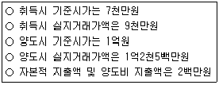
- 2천7백5십만원
- 3천만원
- 3천5십만원
- 3천3백만원
- 3천5백만원
(정답률: 11%)
71. 종합부동산세법상 종합부동산세의 과세대상이 아닌 것을 모두 고른 것은?
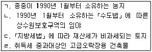
- ㄱ, ㄴ
- ㄴ, ㄷ
- ㄷ, ㄹ
- ㄱ, ㄴ, ㄹ
- ㄱ, ㄴ, ㄷ, ㄹ
(정답률: 22%)
72. 지방세법상 재산세 납세의무에 관한 설명으로 옳은 것은?
- 재산세 과세기준일 현재 소유권의 귀속이 분명하지 아니하여 사실상의 소유자를 확인할 수 없는 경우 그 사용자가 재산세를 납부할 의무가 있다.
- 주택의 건물과 부속토지의 소유자가 다를 경우 그 주택에 대한 산출세액을 건축물과 그 부속토지의 면적 비율로 안분계산한 부분에 대하여 그 소유자를 납세의무자로 본다.
- 국가와 재산세 과세대상 재산을 연부로 매수계약을 체결하고 그 재산의 사용권을 무상으로 받은 경우 매도계약자가 재산세를 납부할 의무가 있다.
- 공부상에 개인 등의 명의로 등재되어 있는 사실상의 종중재산으로서 종중소유임을 신고하지 아니한 경우 종중을 납세의무자로 본다.
- 공유재산인 경우 그 지분에 해당하는 부분에 대하여 그 지분권자를 납세의무자로 보되, 지분의 표시가 없는 경우 공유자 중 최연장자를 납세의무자로 본다.
(정답률: 20%)
73. 소득세법상 장기보유특별공제와 양도소득기본공제에 관한 설명으로 틀린 것은?(단, 거주자의 국내소재 부동산을 양도한 경우임)(문제 오류로 실제 시험에서는 모두 정답 처리 되었습니다. 여기서는 1번을 누르면 정답 처리 됩니다.)
- 보유기간이 3년 이상인 토지 및 건물(미등기양도자산 및 비사업용토지 제외)에 한정하여 장기보유특별공제가 적용된다.
- 1세대 1주택이라도 장기보유특별공제가 적용될 수 있다.
- 장기보유특별공제액은 해당 자산의 양도차익에 보유기간별 공제율을 곱하여 계산한다.
- 등기된 비사업용토지를 양도한 경우 양도소득기본공제 대상이 된다.
- 장기보유특별공제 계산시 해당 자산의 보유기간은 그 자산의 취득일부터 양도일까지로 하지만 「소득세법」제97조 제4항에 따른 배우자 또는 직계존비속간 증여재산에 대한 이월과세가 적용되는 경우에는 증여한 배우자 또는 직계존비속이 해당 자산을 취득한 날부터 기산한다.
(정답률: 33%)
74. 지방세법상 등록면허세에 관한 설명으로 틀린 것은?
- 무덤과 이에 접속된 부속시설물의 부지로 사용되는 토지로서 지적공부상 지목이 묘지인 토지에 관한 등기에 대하여는 등록면허세를 부과하지 아니한다.
- 사실상의 취득가격을 등록면허세의 과세표준으로 하는 경우 등록 당시에 자산재평가의 사유로 그 가액이 달라진 때에는 자산재평가 전의 가액을 과세표준으로 한다.
- 등록면허세 신고서상 금액과 공부상 금액이 다를 경우 공부상 금액을 과세표준으로 한다.
- 부동산 등기에 대한 등록면허세의 납세지는 부동산 소재지이나 그 납세지가 분명하지 아니한 경우에는 등록관청 소재지로 한다.
- 지방세의 체납으로 인하여 압류의 등기를 한 재산에 대하여 압류해제의 등기를 할 경우 등록면허세가 비과세된다.
(정답률: 25%)
75. 다음 중 지방세법상 가장 높은 재산세 표준세율이 적용되는 것은?
- 골프장용 토지
- 읍지역 소재 공장용 건축물의 부속토지
- 고급주택
- 별도합산과세대상 차고용 토지
- 종합합산과세대상 무허가건축물의 부속토지
(정답률: 26%)
76. 지방세법상 재산세 납부에 관한 설명으로 틀린 것은?
- 건축물에 대한 재산세 납기는 매년 7월 16일부터 7월 31일까지이다.
- 주택에 대한 재산세(해당 연도에 부과할 세액이 10만원을 초과함)의 납기는 해당 연도에 부과ㆍ징수할 세액의 2분의 1은 매년 7월 16일부터 7월 31일까지, 나머지 2분의 1은 9월 16일부터 9월 30일까지이다.
- 지방자치단체의 장은 재산세 납부세액이 1천만원을 초과하는 경우 납세의무자의 신청을 받아 관할구역에 관계없이 해당 납세자의 부동산에 대하여 법령으로 정하는 바에 따라 물납을 허가할 수 있다.
- 재산세 납부세액이 1천만원을 초과하여 재산세를 물납하려는 자는 법령으로 정하는 서류를 갖추어 그 납부기한 10일 전까지 납세지를 관할하는 시장ㆍ군수에게 신청하여야 한다.
- 재산세 납부세액이 500만원을 초과하여 재산세를 분할납부하려는 자는 재산세 납부기한까지 법령으로 정하는 신청서를 시장ㆍ군수에게 제출하여야 한다.
(정답률: 29%)
77. 원칙적으로 과세관청의 결정에 의하여 납세의무가 확정되는 지방세를 모두 고른 것은?
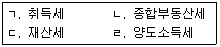
- ㄱ
- ㄴ
- ㄷ
- ㄴ, ㄷ
- ㄷ, ㄹ
(정답률: 35%)
78. 지방세기본법상 공시송달할 수 있는 경우가 아닌 것은?
- 송달을 받아야 할 자의 주소 또는 영업소가 국외에 있고 그 송달이 곤란한 경우
- 송달을 받아야 할 자의 주소 또는 영업소가 분명하지 아니한 경우
- 서류를 우편으로 송달하였으나 받을 사람이 없는 것으로 확인되어 반송됨으로써 납부기한 내에 송달하기 곤란하다고 인정되는 경우
- 서류를 송달할 장소에서 송달을 받을 자가 정당한 사유 없이 그 수령을 거부한 경우
- 세무공무원이 2회 이상 납세자를 방문하여 서류를 교부하려고 하였으나 받을 사람이 없는 것으로 확인되어 납부기한 내에 송달하기 곤란하다고 인정되는 경우
(정답률: 33%)
79. 지방세법상 취득세에 관한 설명으로 옳은 것은?
- 토지의 지목변경에 따른 취득은 지목변경일 이전에 그 사용 여부와 관계없이 사실상 변경된 날과 공부상 변경된 날 중 빠른 날을 취득일로 본다.
- 부동산을 연부로 취득하는 것은 등기일에 관계없이 그 사실상의 최종연부금 지급일을 취득일로 본다.
- 법인장부로 토지의 지목변경에 든 비용이 입증되는 경우 토지의 지목변경에 대한 과세표준은 지목변경 전의 시가표준액에 그 비용을 더한 금액으로 한다.
- 취득세 납세의무가 있는 법인이 장부 등의 작성과 보존의무를 이행하지 아니하는 경우 산출세액의 100분의 20에 상당하는 가산세가 부과된다.
- 甲소유의 미등기건물에 대하여 乙이 채권확보를 위하여 법원의 판결에 의한 소유권보존등기를 甲의 명의로 등기할 경우의 취득세 납세의무는 甲에게 있다.
(정답률: 23%)
80. 지방세법상 취득세액을 계산할 때 중과기준세율만을 적용하는 경우를 모두 고른 것은?(단, 취득세 중과물건이 아님)
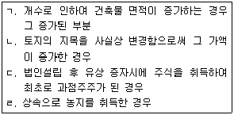
- ㄱ, ㄴ
- ㄱ, ㄹ
- ㄴ, ㄷ
- ㄱ, ㄷ, ㄹ
- ㄴ, ㄷ, ㄹ
(정답률: 18%)
3과목: 임의구분
81. 국토의 계획 및 이용에 관한 법령상 도시ㆍ군기본계획에 관한 설명으로 옳은 것은?
- 시장ㆍ군수는 관할 구역에 대해서만 도시ㆍ군기본계획을 수립할 수 있으며, 인접한 시 또는 군의 관할 구역을 포함하여 계획을 수립할 수 없다.
- 도시ㆍ군기본계획의 내용이 광역도시계획의 내용과 다를 때에는 국토교통부장관이 결정하는 바에 따른다.
- 「수도권정비계획법」에 의한 수도권에 속하지 아니하고 광역시와 경계를 같이하지 아니한 인구 7만명의 군은 도시ㆍ군기본계획을 수립하지 아니할 수 있다.
- 도시ㆍ군기본계획을 변경하는 경우에는 공청회를 개최하지 아니할 수 있다.
- 광역시장이 도시ㆍ군기본계획을 수립하려면 국토교통부장관의 승인을 받아야 한다.
(정답률: 24%)
82. 국토의 계획 및 이용에 관한 법령상 도시ㆍ군관리계획에 관한 설명으로 틀린 것은?
- 주민은 기반시설의 설치에 관한 사항에 대하여 도시ㆍ군관리계획의 입안권자에게 그 입안을 제안할 수 있다.
- 시가화조정구역의 지정에 관한 도시ㆍ군관리계획 결정이 있는 경우에는 결정 당시 이미 허가를 받아 사업을 하고 있는 자라도 허가를 다시 받아야 한다.
- 국가계획과 관련되어 국토교통부장관이 입안한 도시ㆍ군관리계획은 국토교통부장관이 결정한다.
- 공원ㆍ녹지ㆍ유원지 등의 공간시설의 설치에 관한 계획은 도시ㆍ군관리계획에 속한다.
- 도시지역의 축소에 따른 용도지역의 변경을 내용으로 하는 도시ㆍ군관리계획을 입안하는 경우에는 주민의 의견청취를 생략할 수 있다.
(정답률: 25%)
83. 국토의 계획 및 이용에 관한 법령상 조례로 정할 수 있는 건폐율의 최대한도가 다음 중 가장 큰 용도지역은?
- 준주거지역
- 일반상업지역
- 근린상업지역
- 전용공업지역
- 제3종일반주거지역
(정답률: 25%)
84. 국토의 계획 및 이용에 관한 법령상 지구단위계획구역에 관한 설명으로 옳은 것은?
- 「주택법」에 따라 대지조성사업지구로 지정된 지역의 전부에 대하여 지구단위계획구역을 지정할 수는 없다.
- 지구단위계획구역의 결정은 도시ㆍ군관리계획으로 하여야 하나, 지구단위계획의 결정은 그러하지 아니하다.
- 지구단위계획구역은 도시지역이 아니더라도 지정될 수 있다.
- 「도시개발법」에 따라 지정된 20만제곱미터의 도시개발구역에서 개발사업이 끝난 후 10년이 지난 지역은 지구단위계획구역으로 지정하여야 한다.
- 도시지역 내에 지정하는 지구단위계획구역에 대해서는 당해 지역에 적용되는 건폐율의 200퍼센트 이내에서 건폐율을 완화하여 적용할 수 있다.
(정답률: 26%)
85. 국토의 계획 및 이용에 관한 법령상 용도지역에 관한 설명으로 옳은 것은?(단, 조례는 고려하지 않음)
- 저층주택 중심의 편리한 주거환경을 조성하기 위하여 필요한 지역은 제2종전용주거지역으로 지정한다.
- 환경을 저해하지 아니하는 공업의 배치를 위하여 필요한 지역은 준공업지역으로 지정한다.
- 공유수면의 매립구역이 둘 이상의 용도지역에 걸쳐 있는 경우에는 걸친 부분의 면적이 가장 큰 용도지역과 같은 용도지역으로 지정된 것으로 본다.
- 도시지역에 대해 세부 용도지역이 지정되지 아니한 경우 건폐율에 대해서는 자연녹지지역에 관한 규정을 적용한다.
- 하나의 대지가 녹지지역과 그 밖의 다른 용도지역에 걸쳐 있으면서, 녹지지역의 건축물이 미관지구에 걸쳐 있는 경우에는 그 건축물 및 대지의 전부에 대하여 미관지구에 관한 규정을 적용한다.
(정답률: 23%)
86. 국토의 계획 및 이용에 관한 법령상 개발행위의 허가에 관한 설명으로 옳은 것은?
- 전ㆍ답 사이의 지목변경을 수반하는 경작을 위한 토지의 형질변경은 개발행위허가의 대상이 아니다.
- 개발행위허가를 받은 사업면적을 5퍼센트 범위 안에서 축소하거나 확장하는 경우에는 별도의 변경허가를 받을 필요가 없다.
- 개발행위를 허가하는 경우에는 조건을 붙일 수 없다.
- 개발행위로 인하여 주변의 문화재 등이 크게 손상될 우려가 있는 지역에 대해서는 최대 5년까지 개발행위허가를 제한할 수 있다.
- 행정청이 아닌 자가 개발행위허가를 받아 새로 공공시설을 설치한 경우, 종래의 공공시설은 개발행위허가를 받은 자에게 전부 무상으로 귀속된다.
(정답률: 28%)
87. 국토의 계획 및 이용에 관한 법령상 토지거래계약에 관한 허가구역 내에서 행하는 법인 아닌 사인(私人) 간의 다음 거래 중 토지거래계약의 허가가 필요한 것은?(단, 국토교통부장관이 따로 정하여 공고하는 기준면적은 고려하지 않음)
- 주거지역에서 150제곱미터의 토지를 매매하는 계약
- 상업지역에서 150제곱미터의 토지를 매매하는 계약
- 공업지역에서 500제곱미터의 토지를 매매하는 계약
- 녹지지역에서 200제곱미터의 토지를 매매하는 계약
- 도시지역 외의 지역에서 500제곱미터의 임야를 매매하는 계약
(정답률: 24%)
88. 국토의 계획 및 이용에 관한 법령상 도시ㆍ군계획시설에 관한 설명으로 옳은 것은?
- 도시지역에서 장례식장ㆍ종합의료시설ㆍ폐차장 등의 기반시설을 설치하고자 하는 경우에는 미리 도시ㆍ군관리계획으로 결정하여야 한다.
- 도시ㆍ군계획시설결정의 고시일부터 10년 이내에 도시ㆍ군계획시설사업에 관한 실시계획의 인가만 있고 사업이 시행되지 아니하는 경우에는 그 시설부지의 매수청구권이 인정된다.
- 지방의회로부터 장기미집행시설의 해제권고를 받은 시장ㆍ군수는 도지사가 결정한 도시ㆍ군관리계획의 해제를 도시ㆍ군관리계획으로 결정할 수 있다.
- 도지사가 시행한 도시ㆍ군계획시설사업으로 그 도에 속하지 않는 군이 현저히 이익을 받는 경우, 해당 도지사와 군수 간의 비용부담에 관한 협의가 성립되지 아니하는 때에는 안전행정부장관이 결정하는 바에 따른다.
- 도시ㆍ군계획시설사업이 둘 이상의 지방자치단체의 관할 구역에 걸쳐 시행되는 경우, 사업시행자에 대한 협의가 성립되지 아니하는 때에는 사업면적이 가장 큰 지방자치단체가 사업시행자가 된다.
(정답률: 22%)
89. 甲은 도시지역 내에 지정된 지구단위계획구역에서 제3종일반주거지역인 자신의 대지에 건축물을 건축하려고 하는바, 그 대지 중 일부를 학교의 부지로 제공하였다. 국토의 계획 및 이용에 관한 법령상 다음 조건에서 지구단위계획을 통해 완화되는 용적률을 적용할 경우 甲에게 허용될 수 있는 건축물의 최대 연면적은?(단, 지역ㆍ지구의 변경은 없는 것으로 하며, 기타 용적률에 영향을 주는 다른 조건은 고려하지 않음)
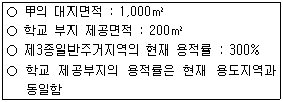
- 3,200m2
- 3,300m2
- 3,600m2
- 3,900m2
- 4,200m2
(정답률: 10%)
90. 국토의 계획 및 이용에 관한 법령상 준주거지역 안에서 건축할 수 있는 건축물은?
- 고물상
- 격리병원
- 일반숙박시설
- 체육관으로서 관람석의 바닥면적이 1천제곱미터 미만인 것
- 단란주점으로서 같은 건축물에 해당 용도로 쓰는 바닥면적의 합계가 150제곱미터 미만인 것
(정답률: 43%)
91. 국토의 계획 및 이용에 관한 법령상 개발밀도관리구역 및 기반시설부담구역에 관한 설명으로 틀린 것은?
- 기반시설부담구역은 개발밀도관리구역 외의 지역에서 지정된다.
- 개발밀도관리구역에서는 당해 용도지역에 적용되는 용적률의 최대한도의 50퍼센트 범위에서 용적률을 강화하여 적용한다.
- 주거지역에서의 개발행위로 기반시설의 용량이 부족할 것으로 예상되는 지역 중 기반시설의 설치가 곤란한 지역으로서, 향후 2년 이내에 당해 지역의 학생수가 학교수용능력을 20퍼센트 이상 초과할 것으로 예상되는 지역은 개발밀도관리구역으로 지정될 수 있다.
- 기반시설설치비용은 현금으로 납부하여야 하며, 부과대상 토지 및 이와 비슷한 토지로 납부할 수 없다.
- 기반시설의 설치가 필요하다고 인정하는 지역으로서 해당 지역의 전년도 개발행위허가 건수가 전전년도 개발행위허가 건수보다 20퍼센트 이상 증가한 지역은 기반시설부담구역으로 지정하여야 한다.
(정답률: 22%)
92. 국토의 계획 및 이용에 관한 법령상 용도구역의 지정에 관한 설명으로 옳은 것은?
- 국토교통부장관은 개발제한구역의 지정을 도시ㆍ군기본계획으로 결정할 수 있다.
- 시ㆍ도지사는 도시자연공원구역의 지정을 광역도시계획으로 결정할 수 있다.
- 시ㆍ도지사는 도시자연공원구역에서 해제되는 구역 중 계획적인 개발이 필요한 지역의 전부 또는 일부에 대하여 지구단위계획구역을 도시ㆍ군관리계획으로 지정할 수 있다.
- 시ㆍ도지사는 수산자원보호구역의 변경을 도시ㆍ군기본계획으로 결정할 수 있다.
- 국토교통부장관은 시가화조정구역의 변경을 광역도시계획으로 결정할 수 있다.
(정답률: 23%)
93. 도시개발법령상 도시개발구역의 지정에 관한 설명으로 옳은 것은?
- 서로 떨어진 둘 이상의 지역은 결합하여 하나의 도시개발구역으로 지정될 수 없다.
- 국가가 도시개발사업의 시행자인 경우 환지 방식의 사업에 대한 개발계획을 수립하려면 토지 소유자의 동의를 받아야 한다.
- 광역시장이 개발계획을 변경하는 경우 군수 또는 구청장은 광역시장으로부터 송부받은 관계 서류를 일반인에게 공람시키지 않아도 된다.
- 도시개발구역의 지정은 도시개발사업의 공사 완료의 공고일에 해제된 것으로 본다.
- 도시개발사업의 공사 완료로 도시개발구역의 지정이 해제의제된 경우에는 도시개발구역의 용도지역은 해당 도시개발구역 지정 전의 용도지역으로 환원되거나 폐지된 것으로 보지 아니한다.
(정답률: 25%)
94. 도시개발법령상 다음 시설을 설치하기 위하여 조성토지등을 공급하는 경우 시행자가 부동산 가격공시 및 감정평가에 관한 법률에 따른 감정평가업자가 감정평가한 가격 이하로 해당 토지의 가격을 정할 수 없는 것은?
- 학교
- 임대주택
- 공공청사
- 행정청이「국토의 계획 및 이용에 관한 법률」에 따라 직접 설치하는 시장
- 「사회복지사업법」에 따른 사회복지법인이 설치하는 유료의 사회복지시설
(정답률: 23%)
95. 도시개발법령상 환지 설계를 평가식으로 하는 경우 다음 조건에서 비례율은?(단, 제시된 조건 이외의 사항은 고려하지 않음)
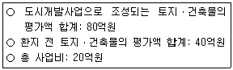
- 100%
- 125%
- 150%
- 200%
- 250%
(정답률: 19%)
96. 도시개발법령상 환지 방식에 의한 사업 시행에 관한 설명으로 틀린 것은?
- 시행자는 규약으로 정하는 목적을 위하여 일정한 토지를 환지로 정하지 아니하고 보류지로 정할 수 있다.
- 시행자는 도시개발사업의 시행을 위하여 필요하면 도시개발구역의 토지에 대하여 환지 예정지를 지정할 수 있다.
- 시행자는 체비지의 용도로 환지 예정지가 지정된 경우에는 도시개발사업에 드는 비용을 충당하기 위하여 이를 처분할 수 있다.
- 군수는「주택법」에 따른 공동주택의 건설을 촉진하기 위하여 필요하다고 인정하면 체비지 중 일부를 같은 지역에 집단으로 정하게 할 수 있다.
- 체비지는 환지 계획에서 정한 자가 환지처분이 공고된 날에 해당 소유권을 취득한다.
(정답률: 29%)
97. 도시개발법령상 조합의 임원에 관한 설명으로 틀린 것은?
- 이사는 의결권을 가진 조합원이어야 한다.
- 이사는 그 조합의 조합장을 겸할 수 없다.
- 감사의 선임은 총회의 의결을 거쳐야 한다.
- 조합장은 총회ㆍ대의원회 또는 이사회의 의장이 된다.
- 이사의 자기를 위한 조합과의 계약에 관하여는 조합장이 조합을 대표한다.
(정답률: 26%)
98. 도시개발법령상 토지상환채권 및 도시개발채권에 관한 설명으로 옳은 것은?
- 도시개발조합은 도시ㆍ군계획시설사업에 필요한 자금을 조달하기 위하여 도시개발채권을 발행할 수 있다.
- 토지상환채권은 질권의 목적으로 할 수 없다.
- 도시개발채권은 무기명으로 발행할 수 없다.
- 시ㆍ도지사가 도시개발채권을 발행하는 경우 상환방법 및 절차에 대하여 안전행정부장관의 승인을 받아야 한다.
- 도시개발채권의 소멸시효는 상환일부터 기산하여 원금은 3년, 이자는 2년으로 한다.
(정답률: 25%)
99. 도시 및 주거환경정비법령상 조합의 설립 등에 관한 설명으로 옳은 것은?
- 조합의 설립인가를 받기 위해서는 조합장의 인감증명서가 포함된 선임동의서를 시장ㆍ군수에게 제출하여야 한다.
- 조합 설립인가가 취소되는 경우에는 시장ㆍ군수는 지체 없이 그 내용을 해당 지방자치단체의 공보에 고시하여야 한다.
- 조합의 임원이 선임 당시 결격사유가 있었음이 선임 이후에 판명되면 당연 퇴임하고, 퇴임 전에 관여한 행위는 효력을 잃게 된다.
- 조합설립추진위원회의 조합 설립을 위한 토지등소유자의 동의는 구두로도 할 수 있다.
- 관리처분계획의 수립 및 변경을 의결하는 총회의 경우에는 조합원의 100분의 10 이상이 직접 출석하여야 한다.
(정답률: 30%)
100. 도시 및 주거환경정비법령상 ( )에 들어갈 내용을 바르게 나열한 것은?
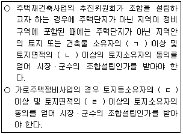
- ㄱ: 3분의 2, ㄴ: 2분의 1, ㄷ: 4분의 3, ㄹ: 3분의 2
- ㄱ: 3분의 2, ㄴ: 2분의 1, ㄷ: 4분의 3, ㄹ: 2분의 1
- ㄱ: 4분의 3, ㄴ: 3분의 2, ㄷ: 3분의 2, ㄹ: 2분의 1
- ㄱ: 4분의 3, ㄴ: 3분의 2, ㄷ: 10분의 9, ㄹ: 3분의 2
- ㄱ: 10분의 9, ㄴ: 3분의 2, ㄷ: 10분의 9, ㄹ: 4분의 3
(정답률: 30%)
101. 도시 및 주거환경정비법령상 토지등소유자에 해당하지 않는 자는?
- 주거환경개선사업의 경우 정비구역 안에 소재한 건축물의 소유자
- 주거환경관리사업의 경우 정비구역 안에 소재한 토지의 지상권자
- 주택재건축사업의 경우 정비구역 안에 소재한 건축물의 부속토지의 지상권자
- 가로주택정비사업의 경우 가로구역에 있는 토지의 지상권자
- 주택재개발사업의 경우 정비구역 안에 소재한 토지의 소유자
(정답률: 21%)
102. 도시 및 주거환경정비법령상 정비기반시설에 해당하는 것은?(단, 주거환경개선사업을 위하여 지정ㆍ고시된 정비구역이 아님)
- 광장
- 놀이터
- 탁아소
- 마을회관
- 공동으로 사용하는 구판장
(정답률: 30%)
103. 도시 및 주거환경정비법령상 시장ㆍ군수가 시ㆍ도지사 또는 대도시의 시장에게 정비구역등의 해제를 요청하여야 하는 경우가 아닌 것은?
- 토지등소유자의 조합설립추진위원회 해산신청에 따라 추진위원회의 승인이 취소되는 경우
- 조합원의 조합 해산신청에 따라 조합의 설립인가가 취소되는 경우
- 조합에 의한 주택재개발사업에서 토지등소유자가 정비구역으로 지정ㆍ고시된 날부터 2년이 되는 날까지 조합설립추진위원회의 승인을 신청하지 아니하는 경우
- 정비예정구역에 대하여 기본계획에서 정한 정비구역지정 예정일부터 3년이 되는 날까지 시장ㆍ군수가 정비구역 지정을 신청하지 아니하는 경우
- 도시환경정비사업을 토지등소유자가 시행하는 경우로서 토지등소유자가 정비구역으로 지정ㆍ고시된 날부터 4년이 되는 날까지 사업시행인가를 신청하지 아니하는 경우
(정답률: 19%)
104. 도시 및 주거환경정비법령상 시장ㆍ군수가 관리처분계획의 인가 내용을 고시하는 경우 고시에 포함되어야 할 관리처분계획인가의 요지로 옳은 것을 모두 고른 것은?
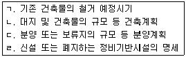
- ㄱ, ㄴ
- ㄴ, ㄹ
- ㄱ, ㄴ, ㄷ
- ㄴ, ㄷ, ㄹ
- ㄱ, ㄴ, ㄷ, ㄹ
(정답률: 22%)
1⑤. 주택법령상 지역주택조합에 관한 설명으로 옳은 것은?
- 등록사업자와 공동으로 주택건설사업을 하는 조합은 국토교통부장관에게 주택건설사업 등록을 하여야 한다.
- 조합과 등록사업자가 공동으로 사업을 시행하면서 시공하는 경우 등록사업자는 자신의 귀책사유로 발생한 손해에 대해서도 조합원에게 배상책임을 지지 않는다.
- 조합설립인가신청일부터 해당 조합주택의 입주가능일까지 주거전용면적 80제곱미터의 주택 1채를 보유하고, 6개월 이상 동일 지역에 거주한 세대주인 자는 조합원의 자격이 있다.
- 조합의 설립인가를 받은 후 승인을 얻어 조합원을 추가 모집하는 경우 추가 모집되는 자의 조합원 자격요건의 충족 여부는 당해 조합의 설립인가신청일을 기준으로 판단한다.
- 조합원의 사망으로 인하여 조합원의 지위를 상속받으려는 자는 무주택자이어야 한다.
(정답률: 24%)
106. 주택법령상 주택거래신고대상인 아파트에 대하여 매매계약을 체결한 후 주택거래신고를 하였다. 이에 대해 관할 시장이 행하는 조치에 관한 설명으로 옳은 것은?
- 시장은 그 신고 내용을 확인한 후 신고증명서를 신고인에게 즉시 발급하여야 한다.
- 시장은 신고 내용의 확인을 위하여 신고인 및 매매계약의 이해관계인에게 직접 본인 명의의 통장 원본과 인감증명을 제출하도록 명할 수 있다.
- 시장은 주택거래계약 신고증명서에 기재된 잔금지급일이 변경된 경우 직권으로 이를 정정하고 신고증명서를 재발급하여야 한다.
- 시장은 주택거래의 신고증명서를 발급한 날부터 15일 이내에 해당 주택 소재지 관할등기소의 장에게 신고사항을 통보하여야 한다.
- 시장은 주택거래신고의 신고된 사항을 활용하여 관할 세무관서의 장과 협의하여 국세 또는 지방세를 부과할 수 있다.
(정답률: 17%)
107. 주택법령상 지역주택조합 총회의 필수적 의결사항에 해당하지 않는 것은?
- 조합임원의 선임 및 해임
- 사업비의 조합원별 분담내역
- 주택상환사채의 발행방법의 변경
- 자금의 차입과 그 방법ㆍ이자율 및 상환방법
- 주택건설대지의 위치 및 면적에 관한 조합규약의 변경
(정답률: 20%)
108. 주택법령상 주택공급질서의 교란을 방지하기 위하여 금지되는 행위가 아닌 것은?
- 주택을 공급받을 수 있는 조합원 지위의 매매
- 주택상환사채의 매매의 알선
- 입주자저축 증서의 저당
- 공공사업의 시행으로 인한 이주대책에 의하여 주택을 공급받을 수 있는 지위의 매매를 위한 인터넷 광고
- 주택을 공급받을 수 있는 증서로서 군수가 발행한 건물철거확인서의 매매
(정답률: 15%)
109. 주택법령상 주택의 사용검사 등에 관한 설명으로 틀린 것은?
- 주택건설 사업계획 승인의 조건이 이행되지 않은 경우에는 공사가 완료된 주택에 대하여 동별로 사용검사를 받을 수 없다.
- 사업주체가 파산하여 주택건설사업을 계속할 수 없고 시공보증자도 없는 경우 입주예정자대표회의가 시공자를 정하여 잔여공사를 시공하고 사용검사를 받아야 한다.
- 주택건설사업을 공구별로 분할하여 시행하는 내용으로 사업계획의 승인을 받은 경우 완공된 주택에 대하여 공구별로 사용검사를 받을 수 있다.
- 사용검사는 그 신청일부터 15일 이내에 하여야 한다.
- 공동주택이 동별로 공사가 완료되고 임시사용승인신청이 있는 경우 대상 주택이 사업계획의 내용에 적합하고 사용에 지장이 없는 때에는 세대별로 임시사용승인을 할 수 있다.
(정답률: 24%)
110. 주택법령상 주택의 전매행위 제한을 받는 주택임에도 불구하고 전매가 허용되는 경우에 해당하는 것은?(단, 전매를 위해 필요한 다른 요건은 충족한 것으로 함)
- 세대주의 근무상 사정으로 인하여 세대원 일부가 수도권으로 이전하는 경우
- 세대원 전원이 1년간 해외에 체류하고자 하는 경우
- 이혼으로 인하여 주택을 그 배우자에게 이전하는 경우
- 세대원 일부가 해외로 이주하는 경우
- 상속에 의하여 취득한 주택으로 세대원 일부가 이전하는 경우
(정답률: 25%)
111. 주택법령상 국민주택채권에 관한 설명으로 옳은 것을 모두 고른 것은?
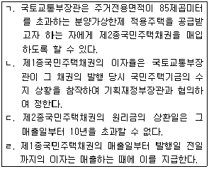
- ㄱ, ㄷ
- ㄱ, ㄹ
- ㄴ, ㄷ
- ㄴ, ㄹ
- ㄷ, ㄹ
(정답률: 8%)
112. 건축법령상 ‘주요구조부’에 해당하는 것은?
- 사이 기둥
- 작은 보
- 차양
- 지붕틀
- 옥외 계단
(정답률: 38%)
113. 건축법령상 공개공지등을 확보하여야 하는 건축물의 공개공지등에 관한 설명으로 ( )에 알맞은 것을 바르게 나열한 것은?
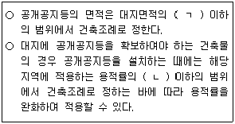
- ㄱ: 100분의 10, ㄴ: 1.1배
- ㄱ: 100분의 10, ㄴ: 1.2배
- ㄱ: 100분의 10, ㄴ: 1.5배
- ㄱ: 100분의 20, ㄴ: 1.1배
- ㄱ: 100분의 20, ㄴ: 1.2배
(정답률: 20%)
114. 건축법령상 건축물이 있는 대지는 조례로 정하는 면적에 못 미치게 분할할 수 없다. 다음 중 조례로 정할 수 있는 최소 분할면적 기준이 가장 작은 용도지역은?(단, 건축법 제3조에 따른 적용 제외는 고려하지 않음)
- 제2종전용주거지역
- 일반상업지역
- 근린상업지역
- 준공업지역
- 생산녹지지역
(정답률: 19%)
115. 건축법령상 건축허가 및 건축신고에 관한 설명으로 틀린 것은?
- 수질을 보호하기 위하여 도지사가 지정ㆍ공고한 구역에 시장ㆍ군수가 3층의 관광호텔의 건축을 허가하기 위해서는 도지사의 사전승인을 받아야 한다.
- 숙박시설에 해당하는 건축물의 건축을 허가하는 경우 건축물의 용도ㆍ규모 또는 형태가 주거환경이나 교육환경 등 주변 환경을 고려할 때 부적합하다고 인정되면 건축위원회의 심의를 거쳐 건축허가를 하지 않을 수 있다.
- 시ㆍ도지사는 시장ㆍ군수ㆍ구청장의 건축허가를 제한한 경우 즉시 국토교통부장관에게 보고하여야 한다.
- 연면적이 180제곱미터이고 2층인 건축물의 대수선은 건축신고의 대상이다.
- 건축신고를 한 자가 신고일부터 6개월 이내에 공사에 착수하지 아니하면 그 신고의 효력은 없어진다.
(정답률: 20%)
116. 건축법령상 건축물의 면적 및 층수의 산정방법에 관한 설명으로 옳은 것을 모두 고른 것은?
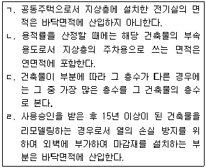
- ㄱ, ㄴ
- ㄱ, ㄷ
- ㄴ, ㄷ
- ㄴ, ㄹ
- ㄷ, ㄹ
(정답률: 23%)
117. 건축법령상 사용승인을 받은 건축물의 용도변경에 관한 설명으로 틀린 것은?
- 단독주택을 다가구주택으로 변경하는 경우에는 건축물대장 기재내용의 변경을 신청하지 않아도 된다.
- 제1종근린생활시설을 의료시설로 변경하는 경우에는 허가를 받아야 한다.
- 숙박시설을 수련시설로 변경하는 경우에는 신고를 하여야 한다.
- 교육연구시설을 판매시설로 변경하는 경우에는 허가를 받아야 한다.
- 공장을 자동차 관련 시설로 변경하는 경우에는 신고를 하여야 한다.
(정답률: 22%)
118. 건축법령상 1,000㎡의 대지에 건축한 다음 건축물의 용적률은 얼마인가?(단, 제시된 조건 외에 다른 조건은 고려하지 않음)
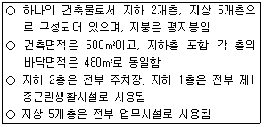
- 240%
- 250%
- 288%
- 300%
- 480%
(정답률: 16%)
119. 농지법령상 농지의 전용에 관한 설명으로 옳은 것은?
- 농업진흥지역 밖의 농지를 마을회관 부지로 전용하려는 자는 농지전용허가를 받아야 한다.
- 농지전용허가를 받은 자가 조업의 정지명령을 위반한 경우에는 그 허가를 취소하여야 한다.
- 농지의 타용도 일시사용허가를 받는 자는 농지보전부담금을 납입하여야 한다.
- 농지전용허가권자는 농지보전부담금의 납입을 조건으로 농지전용허가를 할 수 없다.
- 해당 농지에서 허용되는 주목적사업을 위하여 현장 사무소를 설치하는 용도로 농지를 일시 사용하려는 자는 시장ㆍ군수 또는 자치구구청장에게 신고하여야 한다.
(정답률: 18%)
120. 농지법령상 농지의 임대차에 관한 설명으로 틀린 것은?(단, 농업경영을 하려는 자에게 임대하는 경우이며, 국유농지와 공유농지가 아님을 전제로 함)
- 임대차 기간을 정하지 아니하거나 5년보다 짧은 경우에는 5년으로 약정된 것으로 본다.
- 「농지법」에 위반된 약정으로서 임차인에게 불리한 것은 그 효력이 없다.
- 임대차계약은 서면계약을 원칙으로 한다.
- 임대 농지의 양수인은「농지법」에 따른 임대인의 지위를 승계한 것으로 본다.
- 임대차계약은 그 등기가 없는 경우에도 임차인이 농지소재지를 관할하는 시ㆍ구ㆍ읍ㆍ면의 장의 확인을 받고, 해당 농지를 인도받은 경우에는 그 다음날부터 제3자에 대하여 효력이 생긴다.
(정답률: 22%)